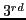
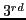

Fine-grained PeMM can be created using additional look-up-table for values of
 as in Table I, where byte-level masking probabilities for selected algorithmic operations are listed. The first column represents the targeted operations while the second column forms a Key variable showing in which bytes the faults locate on both inputs. For instance, key 13 shows faults in
byte of first input and 
byte of second input while key 10 shows no fault in second input but only
byte of the first input. The byte-wise
as in Table I, where byte-level masking probabilities for selected algorithmic operations are listed. The first column represents the targeted operations while the second column forms a Key variable showing in which bytes the faults locate on both inputs. For instance, key 13 shows faults in
byte of first input and 
byte of second input while key 10 shows no fault in second input but only
byte of the first input. The byte-wise
 shows the probabilities of error existence in particular output bytes, such as single input fault in
byte of SUB operation can result in errors in
or even
bytes with reduced probability, whereas for AND operation no cross bytes error could be resulted from single input fault. When faults exist in multiple bytes of the same input, expected masking probabilities could be interpolated based on byte-level error probabilities.
shows the probabilities of error existence in particular output bytes, such as single input fault in
byte of SUB operation can result in errors in
or even
bytes with reduced probability, whereas for AND operation no cross bytes error could be resulted from single input fault. When faults exist in multiple bytes of the same input, expected masking probabilities could be interpolated based on byte-level error probabilities.
Depending on targeted field of application, granularity can be further fine-grained, which requires additional efforts for characterization. For micro-architecture units which do not contain any algorithmic operations, such fine-grained PeMMs are not required since no crossing segment errors are resulted.